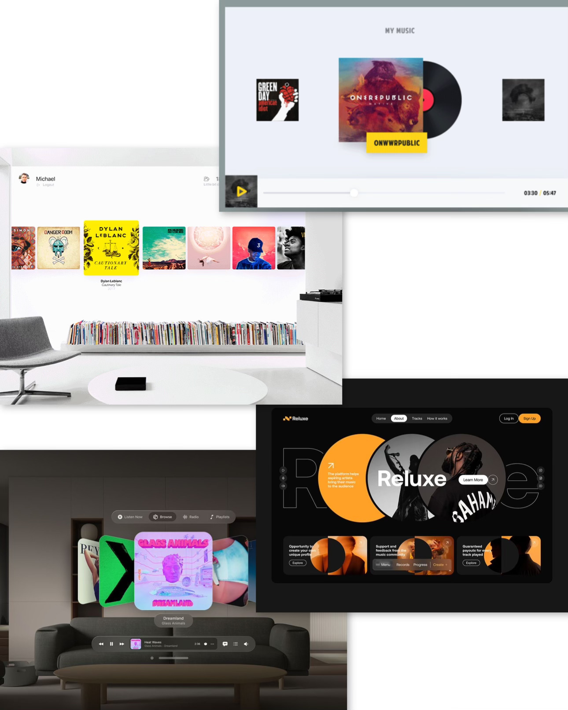

For this project, me and my group member Miya had to design a post-punk themed website. The client was the band Nasmak Pm and they wanted the website to be only for their upcoming dance night, rather than a whole general website.
Project Details
The first day we did some brainstorming on what we need to add in the website, what we would like it to look like and in general what were our goals for it. I stared by searching in Dribble and Pinterest for ideas, I came across a few that I liked, saved them and tried recreating them but still keeping our color pallet in mind and of course making it have that special Nasmak touch. 
After that Miya created a MosCow Table and we started filling in all the ideas we had from the brainstorming. Putting all the important elements in the ‘Must Have’ and the as well important but given more time in the ‘Should Have’. We added the sign up section and the language switch option as ‘Won’t Have’ because we didn’t think we’ll have enough time to make them and also Anke told us that the website is just an example but not the finish product for the client.

Finishing the brainstorming and MosCow we continued to the Project Plan. We did it pretty quickly because we already had all of our ideas. We added a day by day planner so like that we follow a strict plan and we get everything done on time. Project Plan File Here
I started by making a Trello board dividing all of the task between me and my teammate Miya.
We ended up with 8 pages, so it was easy to divide them equally to each other. I had to do the ‘About Us’ page, the Instagram page, the FAQ’s and the gallery room in Blender.
In the showed above board i assigned all of the tasks individually to myself and my team member Miya, avoiding confusion and doing the same thing. Sometimes the assigned tasks have to be changed either to another person or to a further or earlier deadline.
But that is why it is so useful to use trello, because like that the other group members get notified of the changes.

Design Prototype
My initial idea was to feature a picture of all the band members together and handwrite their band’s name. I decided to make the background black and white, with the name in a bright neon purple or green. I liked how it turned out, but I wanted to try something more extravagant.
To gather inspiration, I looked at a variety of band websites across different genres, focusing mainly on post-punk. I also explored some currently trending artists and eventually stopped at Travis Scott. I loved how his website allowed you to scroll through his albums with a moving background. I wanted to include something similar.
However, since this website was specifically for a one-time event, I couldn’t use all of Nasmak’s albums because it would feel more like a general band website rather than one for the concert.
Instead, I decided to focus only on Nasmak’s song covers that would be featured at the event.
I wanted to ensure that when users opened the website, the band’s name was the first thing they saw, even before learning about the event.
I searched for inspiration on Dribbble but couldn’t find anything that stood out to me. Then I moved to Pinterest, where I explored different ideas, hoping to stumble upon the perfect design.
Finally, I found a few concepts that I liked, which I combined into my own design. I added the first and last letters of "Nasmak" and hid the middle letters, creating a subtle, layered effect that gave the impression of the name being tucked into the background.
Feedback
We got feedback from Jo-an on what we have so far and she said she liked the design but the placement on some sections don’t add up, for example there should be a short information of the upcoming event before anything else because like that a user that is not familiar with the band will get a good idea about the event and later on buy tickets.
We fixed that by user testing the structure and later on making it the way the users wanted it.
One student that me and Miya user tested told us that when the CDs on the landing page spin while hovered over, it would be a cool touch that they also play music. We really liked the idea so we wrote it down. Miya later on tried to make it but had difficulties, I tried to help but then we realized that we don’t have that much time to finish it all, therefor we left it out. If one day we continue the project, we will definitely make it work.


Development
As I already mentioned before we ended up with 8 pages so it was easy to divide the work. I did the ‘About Us’ page, the Instagram page, the FAQ’s and the gallery room in Blender.
I had some awareness from classes with my teacher Josh and I researched on the internet the basics I need to know before starting. I watched a couple of videos on YouTube but I followed one that had the most similar result I wanted here. It was very confusing and frustrating at first but after getting the hang of it I found it somewhat enjoyable.

My favorite part was definitely designing the inside, picking out which colors would go well and how to place the images of the band members and so on. I chose the colors of the website me and Miya made. My initial idea was for the blender room to be the ‘About Us’ page but I couldn’t get the room to work in the code, so that is something I am working on and want to improve in. I asked a few people that knew how to do it to explain how it works. I understood it half way but still need to implement it. The ‘About Us’ and Instagram page were easy to do because I have done multiple versions for other projects. The FAQ’s section wasn’t as difficult as I thought, I asked ChatGPT to explain it to me and after that I implemented the learnt in the code.
Me and Miya had to do the easter egg together but she ended up coding most part of it. I gave her the idea of how to look and some tips on how to code should work but because I had difficulties getting the blender room on time I couldn’t help much with it.
Reflection
Through this project, I learned a lot about using Blender, JavaScript, and even picked up a few coding tricks along the way. It was a great hands-on experience that helped me grow in both design and development. I wish we had more time to do more stuff I had in mind and also so I could get the blender in the website. Toon really liked our website, he said he loved the design of the landing page and that it described the band very well.